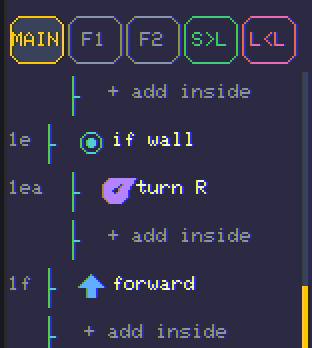

⚔️
Day 3 of 5
Compete
Hand-code a fighter and a striker for the Arena — real bots you build with blocks.
Today you will
Build two Arena bots
- 🤖 Hand-code a battle bot and beat the computer.
- ⚽ Hand-code a soccer bot that dribbles and scores.
- 🏆 Make yours smarter than a friend's to win.
 Home → Arena
Home → Arena
New senses
The robot can feel more now
foe ^ foe < foe > foe near — the rival
ball ^ ball < ball > — the ball (soccer)
net < net > — the goal you shoot at (soccer)
Join two senses with & (and) or | (or).
Battle (Sumo)
Build the hunter 🤖
repeat until goal {
if foe ^ { zap }
if pit { turn right }
if foe > { turn right }
if foe < { turn left }
if wall { turn right }
forward
}
 top
top
 middle ↓
middle ↓
Battle · try it
Beat the computer 🏆
Fight vs Computer and win — your hunter turns to face the rival, then shoves it toward the edge.
A zap only hits the foe in the tile right in front of you — so the turn-to-face rules are what make it land. Lining up the shot is the whole skill.
 turn to face, then zap
turn to face, then zap
Battle · the big lesson
Order = priority
The editor does the first rule that's true, top to bottom.
Move forward to the top of your list → it charges before it aims, and turns dumb. Put it back. Why did the order change the whole bot?

…forward goes last
Soccer
Build the dribbler ⚽
repeat until goal {
if ball ^ {
if net < { turn right }
if net > { turn left }
}
if ball < { turn left }
if ball > { turn right }
forward
}
 top
top
 scroll ↓
scroll ↓
⚽ Pro move
The zap-swap
Caught on the wrong side of the ball? Face it and zap — you and the ball trade places, popping it toward goal and leaving you neatly behind it.
One move instead of slowly circling around.
 zap → trade places
zap → trade places
Soccer
The tricky one ⚽
Your dribbler plays — but scoring cleanly is hard. You have to get behind the ball every time, or a stray push knocks it into your own net.
Getting that exactly right is a real puzzle — keep tuning your rules.
 get behind it, then push
get behind it, then push
Your turn — break the tie
Make your bot smarter
- 🧩 Maze: swap turn left → turn right and race them — one hand is often the shorter way out.
- 🤖 Battle: your zap only hits the tile dead-ahead — so experiment with the turn rules & their order to face the foe faster.
- ⚽ Soccer: find one change that beats a mirror-image bot. (A real, open puzzle — beat it and you out-coded the grown-ups!)
Two identical bots always draw. Smarter wins.
You did it 🎉
Day 3 checkpoint
- My battle hunter beats the computer.
- My soccer bot dribbles and scores.
- I can explain why getting behind the ball matters.
Soccer was tricky to perfect with rules — hold that thought. Next time → 🤖 Day 4: Learn.